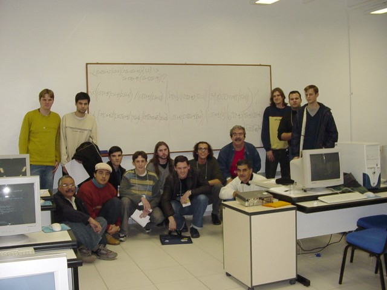
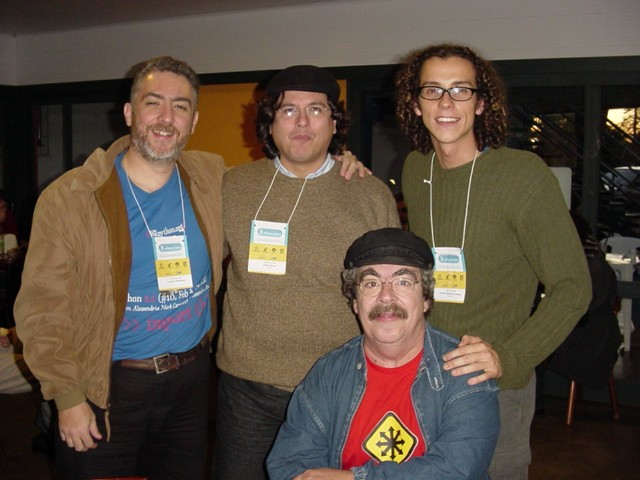

Durante a semana do dia 19 de Julho de 2004, aconteceu em Lajeado - RS o III SDSL, nas salas do Centro Universitário Univates. Eu fui convidado pelo amigo César Brod a participar para ministrar o mini-curso de Expressões Regulares no dia 21.
Foi tudo bem corrido, com saída numa noite e volta no dia seguinte. Mas o curso foi bom, com aprendizado rápido dos alunos e discussão de temas avançados. E claro, o reencontro com os amigos, como já é costumeiro nesses eventos.
Muito Obrigado ao amigo César pelo convite e à Conectiva por ter me liberado para o evento.
Links para os materiais:
Cheguei, Falei, Voltei
O vôo era cedo, às 19h30, então fui direto da Conectiva para o Aeroporto. Trânsito tranquilo, tempo de sobra. Como é bom levar apenas uma mochila nas costas, não precisa despachar malas nem ficar esperando depois. A viagem até Porto Alegre foi rápida, menos de uma hora de vôo.
No desembarque encontrei o Rodrigo, motorista da Univates que me esperava com um cartaz com meu nome. Continuo achando isso engraçado :) Ele também estava esperando alguns professores para aproveitar a mesma "carona". Lajeado deve ficar a uns 100 Km de POA, e com pouco mais de uma hora de carro, chegamos lá.
Muito palha chegar de noite em um lugar desconhecido. Você roda, roda e ele continua desconhecido... Uma coisa interessante que descobri na conversa, é que como a maioria lá é descendente de alemão, na rua se fala português, mas dentro de casa é alemão. As crianças desde cedo já aprendem as duas línguas, isso é massa.
Cheguei no Hotel já era tarde, lá por 11 e meia da noite. O pessoal estava festando num boliche em algum lugar da cidade, mas eu estava cansado e com fome, então só pensava em comer e dormir, e foi o que fiz. Pizza boa, Ki-Kão era o nome da lanchonete.
Pensei que ia pro Rio Grande sentir bastante frio, mas estava como em Curitiba. Frio, mas nem tanto. O dia seguinte amanheceu clássico serrano:
Encontrei com o Luciano Ramalho no café da manhã, ele ia ministrar o curso de Python. Fomos juntos papeando para a Univates, a pé. Deu uma meia hora de caminhada, que serviu para espantar o frio e conhecer um pouquinho a cidade, que é bem simpática.
Nota 10 para a Ana Paula e a organização do evento. Chegamos lá e estava tudo pronto, funcionando, sem estresse. O curso começava às 9 da manhã, e assim foi.
Minha sala estava cheia, tinha 14 interessados em Expressões Regulares. Tinha um pessoal da Solis, cooperativa local tocada pelo César e outros de longe, como o pessoal do Exército que veio lá de Brasília até o interior do RS para nerdear.
Alguns já conheciam algo do assunto, outros não. Comecei do início, devagar e fomos avançando. Já de manhã conseguimos ver mais da metade da apostila, foi um aprendizado bem rápido!
Pausa para o almoço e encontro com mais camaradas: Leo, Julio, Pablo, Nassair, Malheiros, César. Só faltou o Rubens mesmo, que acabei nem vendo.
Na volta, vimos a parte avançada do assunto e esmiuçamos a já tradicional ER para casar números IP. Vou colocá-la aqui, com espaços para ficar mais fácil de entender:
# Expressão Regular para casar números IP: N.N.N.N, onde 0 <= N <= 255
\<
( [0-9]{1,2} | 1[0-9][0-9] | 2[0-4][0-9] | 25[0-5] ) \.){3}
( [0-9]{1,2} | 1[0-9][0-9] | 2[0-4][0-9] | 25[0-5] )
\>
Como o pessoal estava afiado, lasquei exercícios neles, e fizeram sozinhos a expressão para casar horários e no final a temida expressão para casar datas, que respeita a diferença de dias possíveis em cada mês.
Para minha surpresa, além de conseguirem entender a abrangência do problema e fazer a expressão, apareceram duas respostas diferentes e fechamos o curso fazendo uma análise detalhada para decidir qual era a melhor solução. MEGA NERD.
 A turma de feras em Expressões Regulares, com suas crias no quadro
As duas expressões de data que exercitaram os neurônios do pessoal
Para facilitar a leitura, as expressões espaçadas:
\<
( (0?[1-9] | 1[0-9] | 2[0-8]) / (0?[1-9] | 1[012]) |
(29 | 30) / (0?[13-9] | 1[012]) |
31 / (0?[13578] | 1[02] )
) / [012][0-9]{3}
\>
\<
( (0?[1-9] | [12][0-9] | 3[01]) / (0?[13578] | 1[02]) |
(0?[1-9] | [12][0-9] | 30) / (0?[469] | 11 ) |
(0?[1-9] | 1 [0-9] | 2[0-8]) / 0?2
) / [012][0-9]{3}
\>
Assim como no curso de ERs do II SDLSL em Campinas, no início eu pedi para cada aluno dar um valor de 1 a 10 sobre o nível do conhecimento em ERs que ele julgava possuir naquele momento. No final do curso, cada um colocou o número que seria o nível após o curso.
Nem todos lembraram de anotar o número no final, mas dos que o fizeram, todos aumentaram. E alguns aumentaram bastante. Missão cumprida!
NOME ANTES DEPOIS
-------------------------
Armando 1 9
Daniel 0 -
Diego 2 7
Eduardo M. 2 -
Edurado D. 0 5
Fabrício 1 8
Jamiel 2 9
Júnior 5 8
Luiz 5 -
Marcos 5 -
Niumar 0 7
Paulo 0 5
Tiago 1 6
William 3 8,5
Depois do curso, um lanche rápido com o pessoal, e às 18h eu já estava no carro de carona com o Egídio, rumo a Porto Alegre para pegar o avião de volta. A cidade vista de cima com as luzes acesas estava muito legal.
Enfim, foi corrido pra caramba, mas foi muito gratificante. A turma está de parabéns e a organização do evento também. Também consegui terminar de ler o livro do Kelly Slater, o hexa campeão mundial de surfe que lançou sua biografia, show de bola.
 Luciano Ramalho, César Brod, Julio Neves e eu